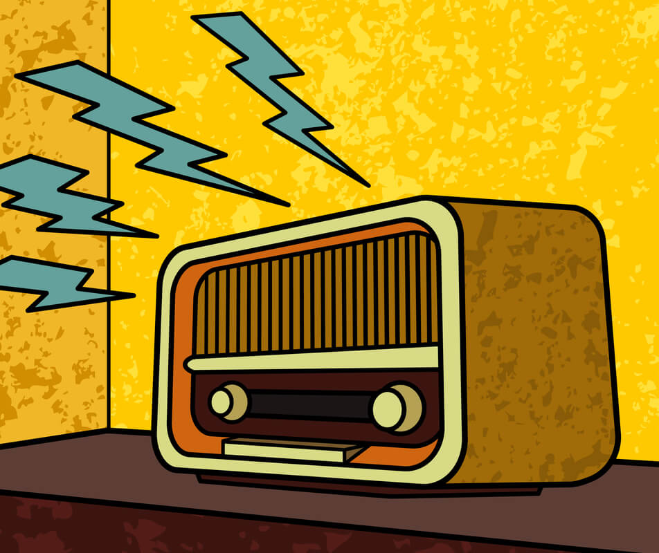

Dia Nacional do Rádio
25 de Setembro
 O Dia Nacional da Rádio é comemorado em 25 de setembro. A data lembra o nascimento de Edgar Roquette-Pinto considerado o “Pai do Rádio Brasileiro”. A primeira transmissão radiofônica no Brasil aconteceu no dia 7 setembro de 1922, na comemoração do centenário da independência brasileira. Na ocasião, uma estação de rádio foi instalada no Corcovado, no Rio de Janeiro, para a veiculação de músicas e do discurso do então presidente Epitácio Pessoa. Hoje, mais de 9 mil emissoras operam em todo o território brasileiro com uma cobertura de 83,8% dos domicílios, segundo dados da Associação Brasileira de Empresas de Rádio e Televisão (Abert).
O rádio foi o primeiro veículo voltado à comunicação de massas. Onipresente, ele se introduziu no dia a dia da população, seja na arena do debate público, seja na intimidade do lar. Democrático, ele espraiou suas ondas igualmente sobre os centros urbanos mais populosos e os rincões mais afastados. É uma fonte acessível e ininterrupta de entretenimento, informação e educação, em benefício de todos os brasileiros.
Mais informações sobre o dia nacional do rádio:
Dia Nacional do Rádio25 de setembro-O rádio é comemorado nesse dia